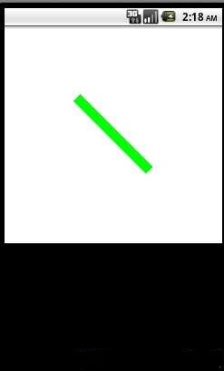
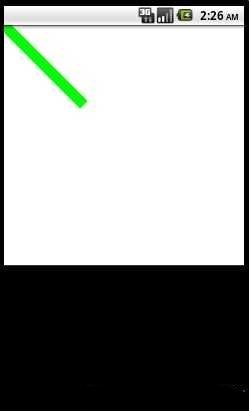

canvas 之save,与restore
最近在自己写view 对onDraw，draw产生了兴趣,大家都知道这两方法都有一个参数。这个参数就是canvas。
看了一下textView里的onDraw，里面有不少的canvas.save(),canvas.restore;
这两个方法是用来存画布状态和读取画布状态的。
举个例子：
在onDraw里这么写:
Paint paint=new Paint();paint.setColor(Color.WHITE);
int height=240;
int width=240;
setHeight(height);
setWidth(width);
canvas.drawRect(0, 0, height, width, paint);
canvas.translate(80, 80);
paint.setColor(Color.GREEN);
paint.setStrokeWidth(10);//画笔粗细
canvas.drawLine(0, 0, 80, 80, paint);
显示是这样的：

Paint paint=new Paint();paint.setColor(Color.WHITE);
int height=240;
int width=240;
setHeight(height);
setWidth(width);
canvas.drawRect(0, 0, height, width, paint);
canvas.save();//加了save
canvas.translate(80, 80);//在restore之后不起作用
paint.setColor(Color.GREEN);
paint.setStrokeWidth(10);//画笔粗细
canvas.restore();//restore以后它会返回save之前的状态
canvas.drawLine(0, 0, 80, 80, paint);
